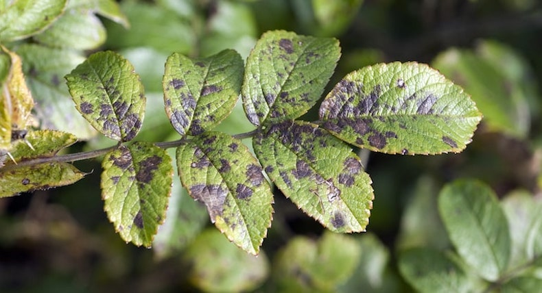

Crop diseases are a significant challenge in agricultural production worldwide. They can lead to severe losses in yield and quality,
impacting both food security and the economy. These diseases are caused by a variety of pathogens, including fungi, bacteria, viruses, and nematodes.
In this essay, we will explore some of the most common crop diseases, their causes, effects on crops, and the methods used to manage them.
1. Fungal Diseases
Fungal pathogens are among the most common causes of crop diseases. They thrive in moist, warm conditions and can spread rapidly, often devastating entire fields if not managed properly.

2. Bacterial Diseases
Bacterial diseases are another major group of crop pathogens. These diseases can cause severe damage and, in some cases, can lead to the complete destruction of crops.

3. Viral Diseases
Viral infections are another common cause of crop disease. Viruses are typically spread by insects, such as aphids and whiteflies, or by mechanical means, such as contaminated tools.
4. Nematode Diseases
Nematodes, microscopic roundworms, are another important group of pathogens that affect crops. They infest the roots of plants, causing physical damage and leading to poor plant growth.
Conclusion
Crop diseases pose a significant threat to global food security and agricultural productivity. Fungal, bacterial, viral, and nematode diseases each have their unique challenges and require tailored management strategies. Through the use of resistant varieties, crop rotation, integrated pest management, and other control methods, farmers can mitigate the impact of these diseases and ensure sustainable agricultural practices. Understanding the complexities of crop diseases and their management is crucial for safeguarding global food supplies and supporting agricultural livelihoods.